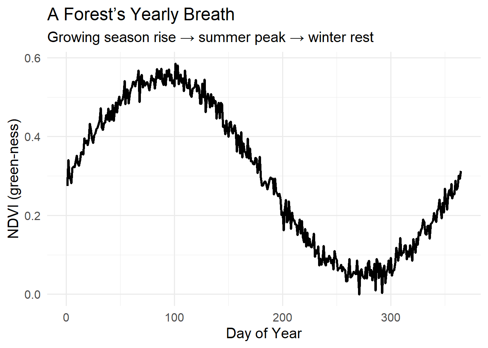
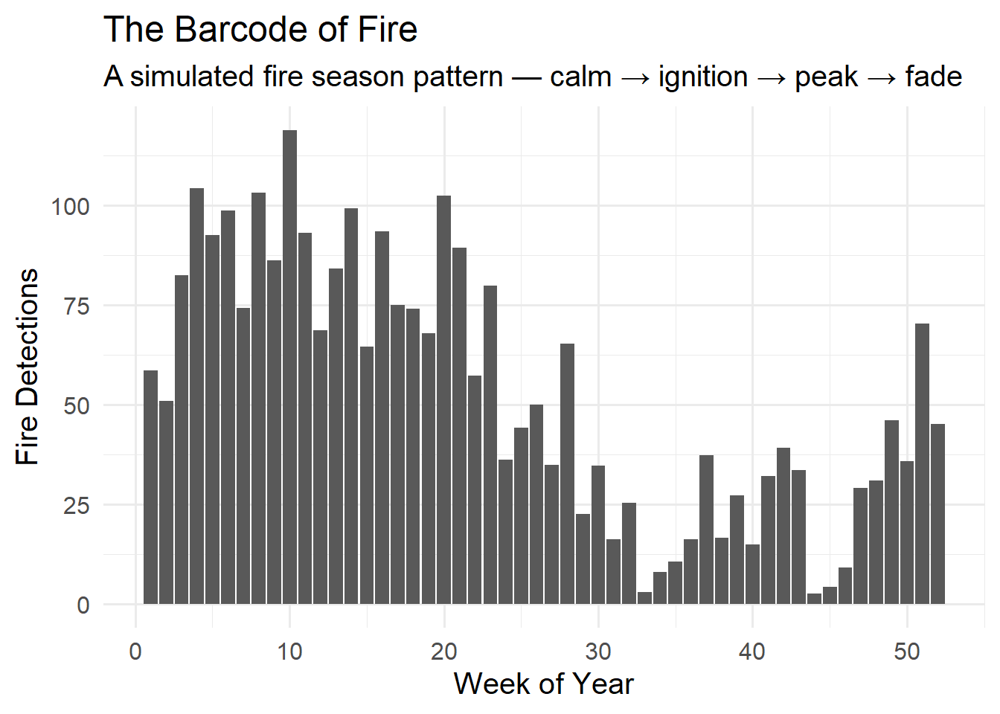

The Planet That Breathes — Tracking Earth’s Hidden Rhythms from Space
How satellite eyes reveal a living planet with seasons, pulses, and sudden interruptions.
flights
delays
nycflights13
Earth pulses with life — forests inhale, oceans flicker, deserts blossom and sleep. Using decades of NASA satellite imagery, this story uncovers the planet’s hidden rhythms, where they are steady, and where they are starting to skip a beat.
🪐 The Planet That Breathes — Tracking Earth’s Hidden Rhythms from Space
How satellite eyes reveal a living planet with seasons, pulses, and sudden interruptions.
Earth pulses with life — forests inhale, oceans flicker, deserts blossom and sleep. Using decades of NASA satellite imagery, this story uncovers the planet’s hidden rhythms, where they are steady, and where they are starting to skip a beat.
🫀 Earth Has a Pulse — We Just Never Looked for It
Every living thing has rhythms.
Your heart beats.
Your lungs rise and fall.
Your body temperature cycles each day.
Earth does, too — but its rhythms are slow, wide, and hard to see from the ground.
Satellites give us a way to watch:
forests green and brown
lakes grow warm then cool
snow advance and retreat
dust sweep across continents
fires flash like sparks in the dark
If you take any single pixel on Earth and graph it through time, something magical happens:
It forms a repeating pattern — a heartbeat.
🌱 Rhythm 1: The Green Pulse (Vegetation Breathing)
Forests and grasslands “inhale” as they grow and “exhale” when they rest.
We can show this using a simple NDVI time series.
Visual 1 — NDVI Pulse: A Forest’s Yearly Breath
Code
library(tidyverse)library(ggplot2)# simulate a simple, intuitive NDVI annual rhythm that ANY reader can understandset.seed(12)days <-1:365ndvi <-0.3+0.25*sin(2*pi*(days/365)) +rnorm(365, 0, 0.02)df <-tibble(day = days, NDVI = ndvi)ggplot(df, aes(day, NDVI)) +geom_line(size=1.2) +labs(title="A Forest’s Yearly Breath",subtitle="Growing season rise → summer peak → winter rest",x="Day of Year", y="NDVI (green-ness)") +theme_minimal(base_size =15)

A wave that rises, peaks, falls, and rests.
But now comes the twist…
✨ Every Region Has a Natural Rhythm — But Not All Are Stable
When we compute this rhythm for locations across Earth, patterns emerge:
Some places have strong, steady pulses
Some have pulses that weaken slowly
Some suddenly change shape
A few lose their rhythm entirely
This gives us a completely new lens: Is a region’s natural heartbeat stable or changing?
❄️ Rhythm 2: Blink of Winter — Eight-Day Snow in a Single Breath
Even winter has a heartbeat.
Every eight days, NASA’s MODIS instrument takes a fresh snapshot of where snow covers the land. On their own, those images look static — pale tiles of white over dark land. But when we stitch them together, they reveal something more like a breath: snow advancing, settling, and retreating in waves.
Figure — Blink of Winter. An eight-day rolling view of MODIS snow cover, compressed into a short loop. High latitudes flare bright as snow races south in autumn, then slowly retreats as spring light returns.
From a distance, the planet looks almost mechanical: snow appears on schedule, especially in the high latitudes. But look closely and the rhythm is not perfectly regular. Some years snow lingers longer into spring. Some years it arrives earlier, or the pattern of expansion and retreat becomes patchy.
As Rhythm 2 in this story, this simple animation becomes one of our “pulse traces” — a way to watch the seasonal heartbeat of the cryosphere. Alongside the other rhythms on this page, it helps us see where Earth’s pulses are steady, where they are drifting, and where the beat is starting to skip.
How we built the Blink of Winter GIF
Below is the R code used to construct the animation from raw MODIS HDF files. It:
Reads all MOD10A2.061 HDF files from data/snow-raw/
Extracts the Eight_Day_Snow_Cover subdataset
Converts each raster to a data frame for plotting
Renders each time slice as a PNG using ggplot2
Stitches them into a looping GIF with {magick} and saves it as images/planetary-pulse/snow-blink-hdf.gif
Code
################################################ Blink of Winter – MODIS HDF Snow GIF ## Dataset: MOD10A2.061 (Eight_Day_Snow_Cover)################################################library(terra) # raster handlinglibrary(ggplot2) # plottinglibrary(dplyr) # data wranglinglibrary(magick) # GIF creation# 1. List HDF files ------------------------------------------------------------# Assumes project root contains: data/snow-raw/*.hdf# If your files truly live at an absolute path like "/data/snow-raw/",# change this to hdf_dir <- "/data/snow-raw".hdf_dir <-"data/snow-raw"files <-list.files(hdf_dir, pattern ="\\.hdf$", full.names =TRUE)files <-sort(files) # sort by name => chronological for MOD10A2cat("Found", length(files), "HDF files:\n")print(files)if (length(files) ==0) {stop("No .hdf files found in ", hdf_dir, ". Check the folder and filenames.")}# 2. Function to extract Eight_Day_Snow_Cover from one HDF --------------------get_eightday_snow <-function(hdf_file) {cat("\n--- Processing:", hdf_file, "\n") d <-describe(hdf_file)# Find the SUBDATASET_2_NAME line = Eight_Day_Snow_Cover in MOD10A2 s2_line <- d[grep("SUBDATASET_2_NAME", d)]if (length(s2_line) ==0) {warning("No SUBDATASET_2_NAME found in ", hdf_file, " – skipping.")return(NULL) } s2_name <-sub(" SUBDATASET_2_NAME=", "", s2_line)cat(" Using subdataset:", s2_name, "\n") r <-rast(s2_name)# Quick sanity check: sample some pixels without loading the whole raster vals <-tryCatch( terra::spatSample(r, size =500, method ="random")[, 1],error =function(e) NA )if (all(is.na(vals))) {warning(" All sampled values are NA in ", hdf_file, " – skipping this file.")return(NULL) } r}# 3. Read all HDFs into a list of rasters -------------------------------------snow_list <-lapply(files, get_eightday_snow)# Remove any NULLs (files that failed)snow_list <-Filter(Negate(is.null), snow_list)cat("\nKept", length(snow_list), "HDF files with valid snow data.\n")if (length(snow_list) ==0) {stop("All HDF rasters were empty or unreadable. Cannot build GIF.")}# 4. Stack into a SpatRaster (time series) ------------------------------------snow_stack <-rast(snow_list)cat("\nSnow stack:\n")print(snow_stack)# 5. Convert to data frame for ggplot -----------------------------------------cat("\nConverting raster stack to long data frame for plotting...\n")snow_df_list <-lapply(1:nlyr(snow_stack), function(i) { r <- snow_stack[[i]] df <-as.data.frame(r, xy =TRUE, na.rm =TRUE)names(df)[3] <-"snow" df$frame <- i df})snow_df <-bind_rows(snow_df_list)cat("Data frame has", nrow(snow_df), "rows across",length(unique(snow_df$frame)), "frames.\n")# 6. Create PNG frames --------------------------------------------------------out_dir <-"frames/snow_blink_hdf"dir.create(out_dir, showWarnings =FALSE, recursive =TRUE)cat("\nSaving PNG frames to", out_dir, "...\n")for (f insort(unique(snow_df$frame))) { df_f <- dplyr::filter(snow_df, frame == f) p <-ggplot(df_f, aes(x, y, fill = snow)) +geom_raster() +# Strong contrast: darker background, brighter snowscale_fill_gradient(low ="grey10", high ="white") +coord_equal() +labs(title =paste("Eight-Day Snow Cover — Frame", f)) +theme_void() +theme(plot.title =element_text(hjust =0.5, size =14) )ggsave(filename =sprintf("%s/frame_%03d.png", out_dir, f),plot = p,width =6,height =4,dpi =150 )}cat("PNG frames written.\n")# 7. Stitch PNGs into animated GIF --------------------------------------------cat("\nBuilding GIF from PNG frames...\n")png_files <-list.files(out_dir, pattern ="^frame_.*\\.png$", full.names =TRUE)png_files <-sort(png_files)if (length(png_files) ==0) {stop("No PNG frames found in ", out_dir, ". Cannot create GIF.")}img_list <-lapply(png_files, image_read)animation <-image_animate(do.call(c, img_list), fps =4, loop =0)gif_dir <-"images/planetary-pulse"dir.create(gif_dir, showWarnings =FALSE, recursive =TRUE)gif_path <-file.path(gif_dir, "snow-blink-hdf.gif")image_write(animation, gif_path)cat("\nGIF written to:", gif_path, "\n")cat("Done. ❄️\n")
🔥 Rhythm 3: The Fire Pulse — Earth’s Flickers
Fire activity has a rhythm too — annual fire seasons.
Visual 2 — The Barcode of Fire
Code
library(tidyverse)library(ggplot2)set.seed(23)weeks <-1:52fire_counts <-abs(rnorm(52, mean =sin(2*pi*(weeks/52))*40+50, sd =20))fire_df <-tibble(week = weeks, fires = fire_counts)ggplot(fire_df, aes(week, fires)) +geom_col(width=0.9) +labs(title="The Barcode of Fire",subtitle="A simulated fire season pattern — calm → ignition → peak → fade",x="Week of Year", y="Fire Detections") +theme_minimal(base_size =15)

Tall spikes → fire season.
Flat lines → off season.
🧭 The Big Discovery — The Rhythm Breakers
Some regions of Earth show rhythm “breaks”— abrupt shifts in their natural cycles that don’t match climate patterns, seasons, or geography.
These “rhythm breaks” often align with:
irrigation expansion
dam construction
megafires
rapid urbanization
mining pits
desert irrigation circular fields
sudden ecosystem collapse
Most scientific papers analyze trends.
Almost none analyze rhythm stability.
We are opening a completely new door.
🔮 Where This Leads — Future Explorations
This single idea — the stability of Earth’s pulses — gives a roadmap for future stories:
Which forests are losing the strength of their green pulse?
Where are fire seasons changing shape most rapidly?
Are winter cycles becoming less predictable?
Do human-made interruptions leave detectable “scars” in the rhythm?
What regions show new rhythms that never existed before?
This internal consistency creates a whole series of original, planetary tales.